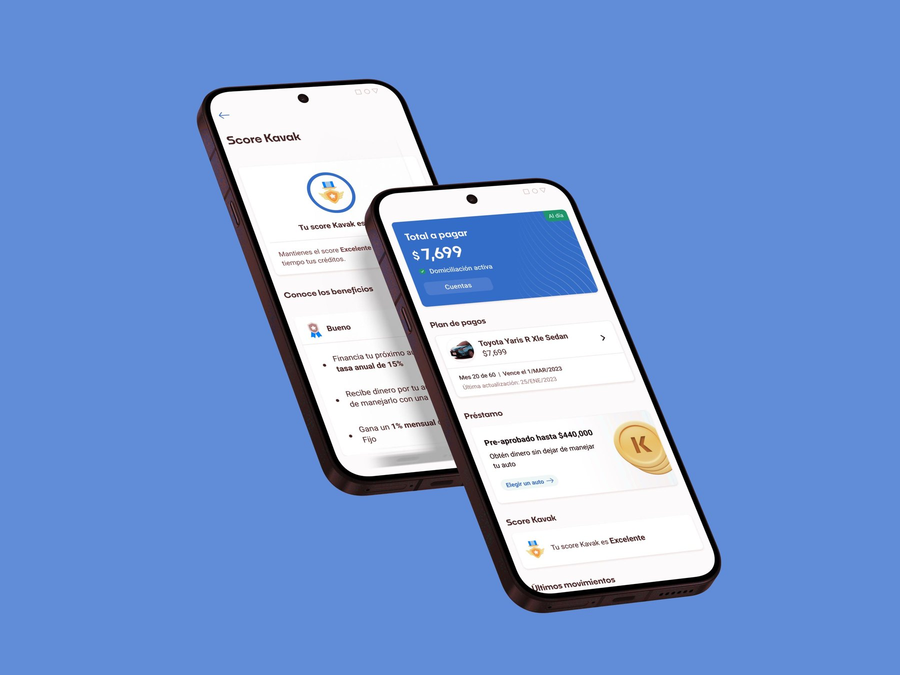
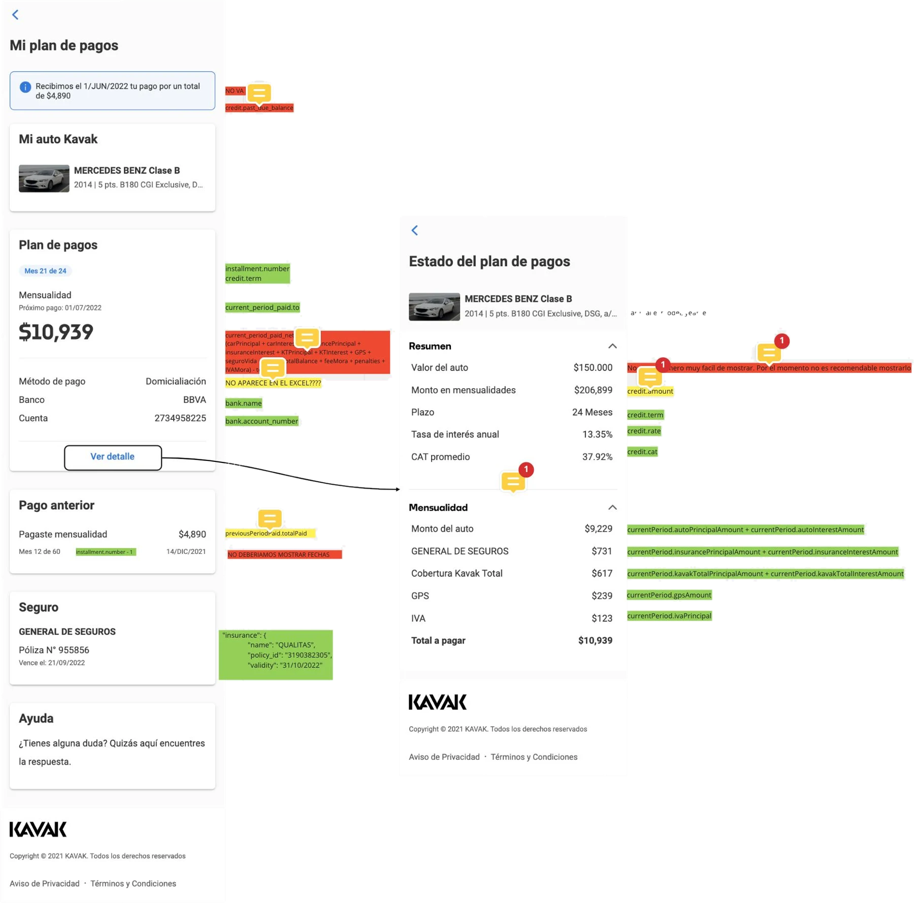
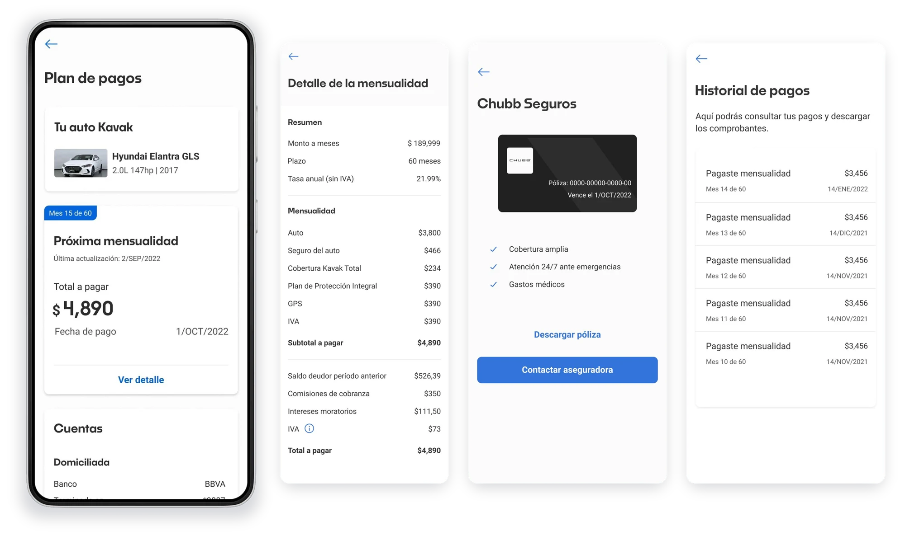

Case study · Fintech · Car financing in Mexico
Kavak Capital: manage your car loan without calling.
I designed a new post-sales section in the Kavak app, so people with a car loan could check their payment plan, change their debit account and find their insurance policy on their own, instead of calling the Contact Center.

Context & Problem
Over 2,000 calls a month were about post-sales payments.
Kavak is a Mexican online marketplace for used cars: in July 2022, the second most valuable unicorn in Latin America. More than 50% of its sales include financing through Kavak Capital.
By May 2022, the Contact Center was receiving over 2,000 calls a month about post-sales payment issues: a huge cost in money, people and time. Operations turned to the New Products Squad, where I was the principal UX Designer.
What I set out to do:
- Self-managementLet users check and manage their loan without calling.
- Fewer callsReduce Contact Center calls about payments.
- Information within reachKeep critical loan information always accessible.
What I designed:
- Payment plan sectionMonthly payment, next due date and payment history.
- Debit accountChange it from the app, without calling.
- Insurance policyAlways available inside the section.
- Help and FAQsAnswers on the spot.
Research & Discovery
Getting the team on the same page.
- 01 Listen to the callsTo understand our users' primary pain points, my first step was listening to recorded Contact Center calls.
- 02 Look aroundI analyzed direct and indirect competitors and how they handle information about credits, loans, bank statements, payments and reported issues.
- 03 Decide togetherI facilitated an ideation and co-creation workshop with IT, Product, UX and Business: problem statement, Scope Canvas, ideation, voting and an Impact-Effort Matrix.
- 04 Test with real usersI went to Mexico City to interview real users and test the new section with them.
What the users told us.
16 interviews and usability tests in CDMX with active credit users who had recently contacted customer care.
understood the section was there to help them manage their payments.
said the payment information covered the basics to control their credit.
valued changing their debit account here, without calling.
found it useful to access their insurance policy here.
Design
Three decisions that shaped the section.
1. Sketch in the open
I started with lo-fi designs in Miro and shared the board with the whole team, so they could give feedback and start writing instructions for the devs early.

2. Take the tested flow further
The tested flow proved effective, simple and easy to use, but the look and feel could go further. I iterated on clarity and visual hierarchy, and added animations to improve the experience.

3. Grow the Design System, not around it
Weekly check-ins with the Design System team kept the new section coherent with the rest of the app. The new components and styles made the system more versatile and supported other teams in their own projects.
Prototype.
The new section: payment plan, insurance, warranty, accounts and Kavak score.
Outcomes
What changed, and what I learned.
After launch · September 2022:
- Positive first signalsAn uptick in NPS, fewer Contact Center calls and favorable feedback in Hotjar surveys.
- Letting users knowAn email campaign with marketing announced the new section.
- Launch limitationsTechnical issues meant we couldn't yet show payment status or rename the bank statement transaction.